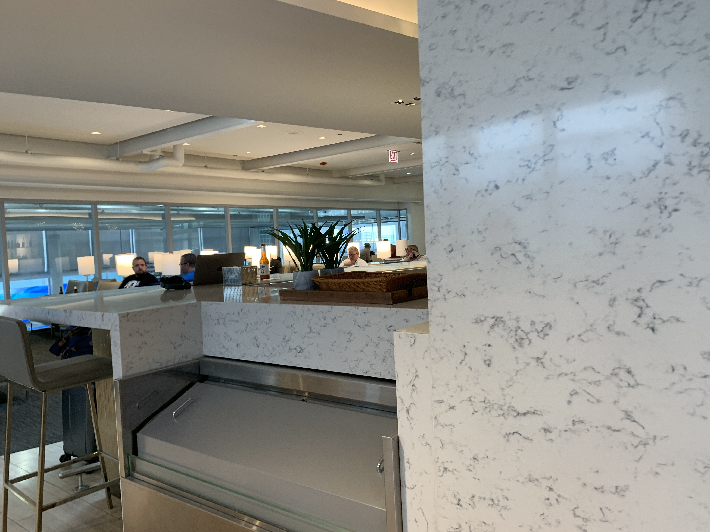

United Club B6, Chicago O'Hare (August 2021)
All Posts: Welcome Back to the Skies
- United Airlines Boeing 737-900ER Minneapolis to Chicago in First Class
- United Airlines Boeing 777-300ER Chicago to Orlando and Back in First Class (Polaris Seat)
- This Post: United Club B6, Chicago O'Hare
Below is Post 3.
After landing in Chicago and eating a rather tasty dinner, I crossed the tunnel into Concourse B. I have not crossed that tunnel in too long, so I figured I should do so.
 I went to the club across gate B6. On a previous visit, I went to the club at gate B18 but this time, I wanted to try a different one. I had a pass I wanted to burn anyways (not literally).
I went to the club across gate B6. On a previous visit, I went to the club at gate B18 but this time, I wanted to try a different one. I had a pass I wanted to burn anyways (not literally).
Check out my report here: United Club B18, Chicago O’Hare
Besides, my connection was delayed too.
Quite terribly.
After getting my passes scanned by the lounge agent at the door (she was really nice, so I hesitate to call her “lounge dragon”), I had to take an escalator upstairs. Ok, so this should really set up some expectations, right? Having to change floor levels, hmm? Otherwise, must’ve been too small to set up a decent lounge, right?
Here’s the view once upstairs. Yeah… good luck finding a seat. For reference, it’s 5 pm. The lounge closes at 10 pm the day I was there.
There was a very mediocre spread of food, I did take a few of the more “substantial” items.
Who doesn’t like snacks??
There’s hot water for the instant noodles (lol) and two barista-style coffee machines.
There was also decaf and plain coffee, and a coke machine for soft drinks and “juice” (bunch of sugar).
There are private phone rooms.
I set up work at one of these counters because it had a lot of power outlets and did my classwork (photo taken around 7 pm).
 There’s more seating (photo taken around 7 pm).
There’s more seating (photo taken around 7 pm).
And more seating, though I would only sit here if I was planning on just eating (photo taken around 7 pm).
You can sign up for CLEAR here!
FIDS slideshow showing radar, delay map, etc.
And then there’s the actual flight information for the day. My flight to Minneapolis/St. Paul is delayed (UA783 with a bunch of codeshares now departs a minute later than the last flight of the day to MSP).
 There’s a halfway decent bar hidden in the “back” of the lounge.
The selection up north was cleared around 7 pm, so I walked to the “main” selection down south.
Which had hot dogs and burritos, all heated.
Here’s the QR code for list of ingredients. It was a PDF and I saved it to my phone.
The hot dog isn’t quite a “Chicago Dog” but it was ok. For a better hot dog, buy one in the terminal! There’s a lot of better places in the terminal, honestly.
 When I got the “now boarding” notification on my phone, I went back down into the terminal, crossed the tunnel, and made my way to C28. It was 8:37 (look at the time on the upper left)
When I got the “now boarding” notification on my phone, I went back down into the terminal, crossed the tunnel, and made my way to C28. It was 8:37 (look at the time on the upper left)
Here’s my verdict. Think before spending $59 on this lounge. Do some math here. It’s not that hard. Set aside $20 (actually, less than that) for a good hot dog (with drink and fries), another $10 for a large bottle of water, and that means a little over half the price of a pass into the United Club lounge for a good meal and drink (around $30). It will probably be even less than that. Though the “privacy”, internet, and quietness are much better than down in the terminal. I submitted two homework assignments for my college class (and got full marks). Plus, the delay of my connecting flight turned a 3.5-hour layover into a 5-hour stay. So, in my case, it was actually worth the escape in the lounge.
What I wish I did was overnight in Chicago and fly the 7:30 am UA781 to MSP (it was a Boeing 737-800, but I have never flown on United’s B738 even though I have quite a few flights logged with them). Because when I landed in MSP, the drive back into Wisconsin was so tiring. Plus, I could freely change my flight with the new policy in place (which, by the way, is not pandemic-specific).
All Posts: Welcome Back to the Skies
- United Airlines Boeing 737-900ER Minneapolis to Chicago in First Class
- United Airlines Boeing 777-300ER Chicago to Orlando and Back in First Class (Polaris Seat)
- This Post: United Club B6, Chicago O'Hare